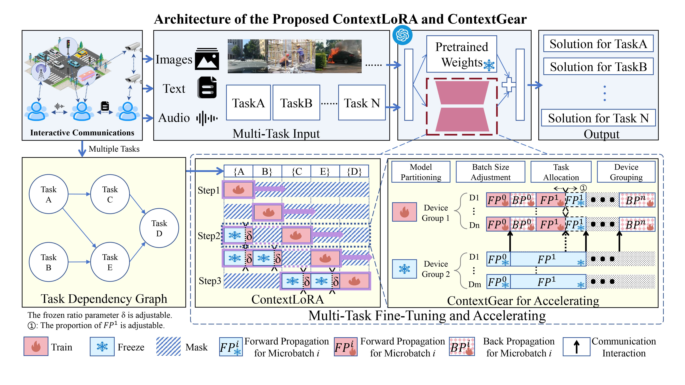
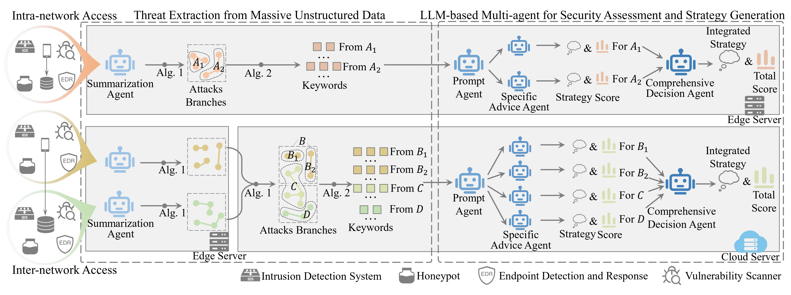
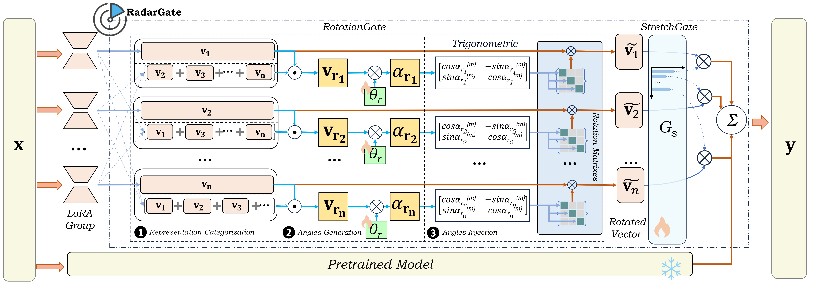

* Equal contribution
✉ Corresponding author

NeurIPS 2025
Advancing Expert Specialization for Better MoE
Annual Conference on Neural Information Processing Systems (NeurIPS), 2025 (Oral)

AAAI 2026
A Rolling Stone Gathers No Moss: Adaptive Policy Optimization for Stable Self-Evaluation in Large Multimodal Models
Annual AAAI Conference on Artificial Intelligence (AAAI), 2026 (Oral)

ICCV 2025
VideoMiner: Iteratively Grounding Key Frames of Hour-Long Videos via Tree-based Group Relative Policy Optimization
International Conference on Computer Vision (ICCV), 2025

JSAC
Advancing Compositional LLM Reasoning with Structured Task Relations in Interactive Multimodal Communications
IEEE Journal on Selected Areas in Communications

JSAC
Exploring LLM-based multi-agent situation awareness for zero-trust space-air-ground integrated network
IEEE Journal on Selected Areas in Communications
